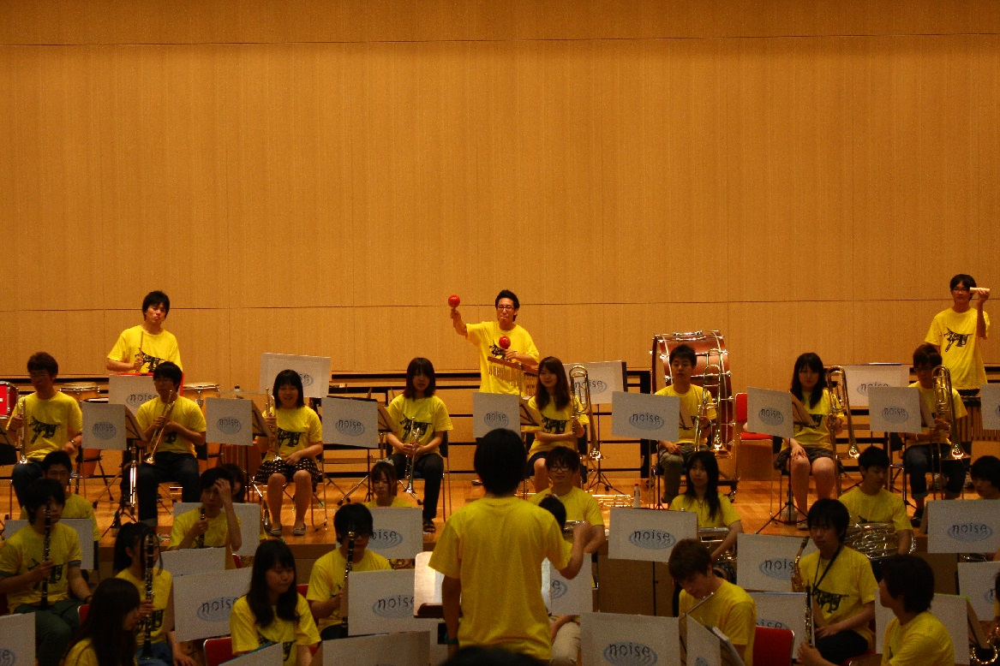

プロジェクトマネジメント実験



イベント日程
| -2013年- | |
|---|---|
| 4月1日（月） | 入学式（幕張メッセ イベントホール） |
| 4月2日（火）～4月5日(金) | 前期ガイダンス・健康診断 |
| 4月6日（土） | 前期授業開始 |
| 4月30日（火） | 自学自習の日（休講） |
| 5月1日（水） | 開学記念日振替休日（休講） |
| 5月2日（木） | 自学自習の日（休講） |
| 5月15日（水） | 開学記念日（通常授業） |
| 6月9日（日） | 文化の祭典 |
| 7月15日（月） | 休日授業日（月曜授業） |
| 7月27日（土） | 月曜日授業の振替日、前期授業終了 |
| 7月29日（月）～7月31日（水） | 前期共通試験期間 |
| 8月1日（木）～9月17日（火） | 夏期休業期間 |
| 8月19日（月）～9月6日（金） | 夏期集中授業期間（教職科目集中講義・補充授業等） |
| 9月18日（水） | 後期ガイダンス |
| 9月19日（木） | 後期授業開始 |
| 9月23日（月） | 休日授業日（月曜授業） |
| 10月8日（火） | スポーツフェスティバル（休講） |
| 10月14日（月） | 休日授業日（月曜授業） |
| 11月4日（月） | 休日授業日（月曜授業） |
| 11月21日（木） | 津田沼祭（大学祭）準備（休講） |
| 11月22日（金）～11月24日（日） | 津田沼祭 （大学祭） |
| 11月25日（月） | 津田沼祭 （大学祭）片付け（休講） |
| 12月23日（月） | 休日授業日（月曜授業） |
| 12月25日（水）～2013年1月10日（金） | 冬期休業期間 |
| -2014年- | |
|---|---|
| 1月27日（月） | 後期授業終了 |
| 1月28日（火）～1月30日（木） | 後期共通試験期間 |
| 2月10日（月）～2月15日（土）
2月19日（水）～2月25日（火） |
春期集中授業期間（教職科目集中講義・補充授業等） |
| 3月22日（土） | 学位記授与式（幕張メッセ イベントホール） |
交通アクセス
＊JR総武線/津田沼駅駅前
《南口》（東京駅から快速28分）
＊京成線/京成津田沼駅下車
徒歩10分（京成上野駅から快速37分）
＊新京成線/新津田沼駅下車
徒歩3分
詳しくはこちら⇒
パンフレット（PDF）